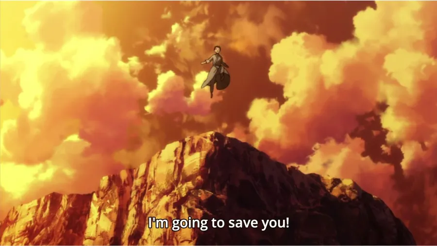

Re: Zero follows the story of Subaru Natsuki, transported to a fantastical world of sword and sorcery with seemingly no explanation, he quickly discovers he is given checkpoints in this world when he dies. This quickly leads him to a sense of obligation towards preventing potental tragedies and saving those he can, while also benefiting himself. Very soon after he arrives he finds himself in a manor lead by a lord, a canadite for the next monarch of the continent, two maids, and a librarian. Due to the nature of his ability, It's difficult to discern how exactly Subaru meets his fate, and with many events happening concurrently, we are not given a clear picture of what exactly happened until the very end of the storyline.
Original Timeline
The Roswaal Manor harbors many dark secrets
Subaru arrives at the happy Roswaal manor, being an person from modern day, he is strikingly out of place in the fantastical world he now exist in, he's exceedingly well groomed and in good shape, but has no title, noteworthy family name, no skills in any physical labor such as farming or house keeping, and cannot read or write the common lanaguage. That said he is honest and earnest, and gives his very best efforts to both learn and contribute. These qualities help Subaru surpass his questionable origin and gain the trust of inhabitats at the mansion. Unknown to Subaru at the time, he is cursed while shopping in town with one of the maids, Rem, and dies in his sleep on the third night. Sending him back to the beginning of his journey in the mansion.
Permutation 1
Subaru seeks the source of mystery, only to find questions, rather than answers.
Confused and afraid, Subaru reawakens on the first day, he isn't sure of what killed him on original run through of the events, but is determined to find out. As well as eager to redevelop all of the relationships that he had lost. Subaru's primary method of accomplishing this is attempting to reverse enginner the exact same situations he was in before to get the same emotions out of his friends. Unfortunately, this does not go as intended, and he ends up coming off as bizzare and insincere, the lack of sinceresity being especially egregious, as that was his strongest trait when it came to winning the favor of the denizins of the mansion in the first place. He is once again, unknowingly cursed while shopping with the maid, but attempts to stay awake so he won't die in his sleep. The curse takes it's effect on him overnight, making him gravely ill, Subaru prowls the halls of the mansion trying to find a help, but is found and killed by the younger maid, who saw it as an oppertunity to get rid of a suspicious and potentally dangerous character.
Permutation 2
The Event horizion of despair rears it's ugly head.
Subaru, unaware of who killed him, wakes up on day one of the mansion again, at this stage, his levels of stress and anxiety are rising to unsustainable heights. He has no real leads aside from knowing he's been cursed with some spell and murdered with a weapon akain to a flail aside. He decides to completely forgo any responsibilties in the mansion to give himself time to investigate, treating the situation casually. At this point, his story doesn't add up for anyone else, he knows things that he shouldn't about the layout of the mansion and it's denizens, he treats situations with little care as he has become detachted due to reliving them several times. Subaru plans to pretend to leave the mansion on the third day while keeping watch on it from a vantage point to spot any assassins as they may enter, but by doing so, he makes himself appear more like an assassin than anything else. He learns the identiy of his killer: The maid Rem, who, along with her sister maid, stalk him through the forest and kill him, sending him back to the first day.
Permutation 3
Subaru, unwilling to return to mediocrity, risks all he has for his new life
Subaru, having been sent back again, has reached the end of his wit. He feels he can no longer trust anyone at the mansion, and believes from the beginning he's been conspiried against. While shutting himself in and refusing to talk to anyone, he is eventually reached out to by the librarian of the mansion, Beatrice. Beatrice offers insight to an additional reason Subaru may be untrustworthy to anyone in the world, as he has a miasma reminiscent of a infamous witch on him. Beatrice agrees to protect him on the third night, and the two form a pact. Unknown to Subaru, and due to his truama, the rest of the mansion see him not as some agent of witch, but a victim of her, and in his sleep, he is comforted from night terrors by the twin maids. As the week progresses, The younger maid, Rem, is cursed instead of Subaru, and while he is protected by Beatrice in his sleep, she dies of weakness. This turn of events snaps Subaru out of his funk, and he begins to realize that he needs to treat this ability, and this world with more respect. Ultimately, Subaru ends up taking his own life in an attempt to save not only himself, but the friends he had made as well.
True Timeline
If suffering is a given in life, then seek to live a life worth suffering
Subaru now knows that the score is, and refuses to allow anyone to lose their life in his place. He doesn't want to give up on the oppertunity to make friends in this new world and so he sets off on his best behavior, taking his new interactions seriously and trying to defy his misbegotten fate. Ultimately, Subaru is still a very suspicious character, and for the first time since the original timeline, his earnesty and honest towards making the most of his situation wins over the residents of the manor. Subaru ultimately discovers the nature and source of the curse, and sets off with Rem to prevent any other deaths from occuring, against tremendous odds, Subrau and Rem manage to prevail and become something of local heroes to the villages that stands adjactent to the manor.